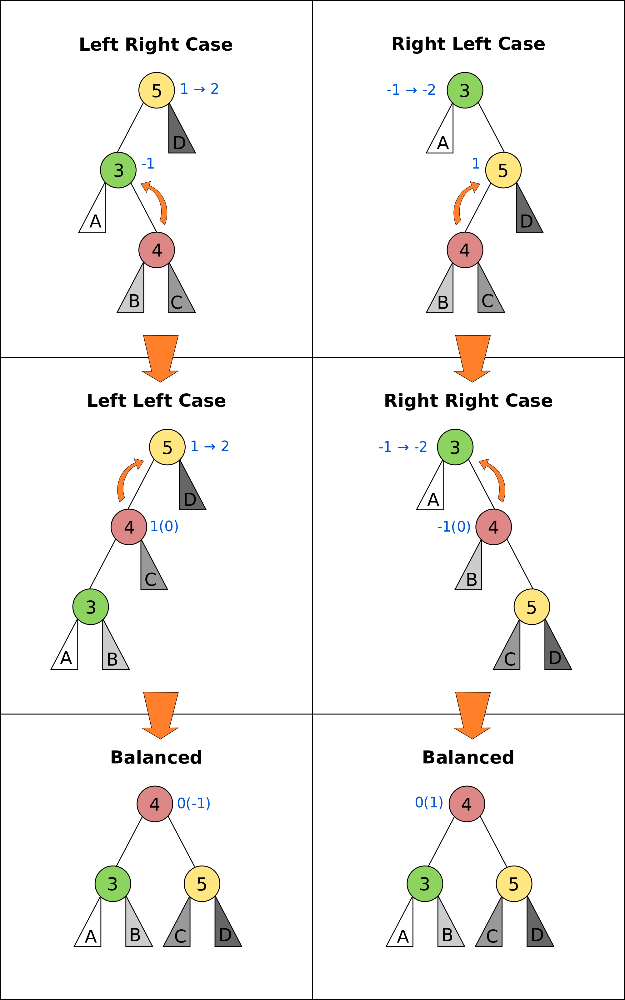

Data Structures and Algorithms
1 Java
1.1 Access Modifier
C: Class; P: Package; SC: Subclass; W: World
| Modifier | C | P | SC | W |
|---|---|---|---|---|
| public | Y | Y | Y | Y |
| protected | Y | Y | Y | N |
| none | Y | Y | N | N |
| private | Y | N | N | N |
1.2 Comparable
Implement Comparable<T>:
int compareTo(T o)
1.3 hashCode
- If two objects are
equal,hashCodemust return the same result - hashCode must return the same result hen invoked on the same object more than once
int hashCode() {}
boolean equals(Object o) {}
1.4 Common Issues
Array out of bounds; divide by zero; infinite loop; exception thrown but not caught; access member variable in static method
2 Algorithmic Analysis
- Amortized Cost
- Algo has amortized cost \(T(n)\) if ∀ k ∈ \mathbb{Z}, cost of k operations is \(\leq kT(n)\)
2.1 Master's Theorem
\(T(n) = aT(\frac{n}{b}) + f(n)\) where a ≥ 1, b > 1
- \(f(n) \in O(n^c)\text{, } c < \log_ba \\ \text{ then } T(n) \in \Theta(n^{\log_ba})\)
- \(f(n) \in O(n^c\log^kn)\text{, } c = \log_ba \\ \text{ then } T(n) \in \Theta(n^c\log^{k+1}n)\)
- \(f(n) \in O(n^c), c > \log_ba \text{ and } \exists k \\ \text{ st } af(\frac{n}{b})\le kf(n) \text{ then } T(n) \in \Theta(n^{\log_ba})\)
2.1.1 Common Ones
- \(T(n) = T(n/2) + \Theta(1) = O(\log n)\) (Binary Search)
- \(T(n) = 2T(n/2) + \Theta(1) = O(n)\) (Binary Tree Traversal)
- \(T(n) = 2T(n/2) + \Theta(\log n) = O(n)\) (Optimal Sorted Matrix Search)
- \(T(n) = 2T(n/2) + O(n) = O(n \log n)\) (Merge Sort)
3 Abstract Data Types
- Bag
- Insert(i); Draw()
- Stack (LIFO)
- empty(); peek(); pop(); push(i)
- Queue (FIFO)
- add(); offer(i); peek(); poll(); remove()
- Dequeue
- double-ended queue
4 Searching
- Binary Search \(O(\log n)\)
int binarySearch(int[] arr, int key) {
int start = 0, end = arr.length - 1;
int found = -1;
while(start <= end) {
int mid = start + (end - start)/2;
if(arr[mid] < key) {
start = mid + 1;
} else if(arr[mid] > key) {
end = mid - 1;
} else {
found = mid;
// if we want first instance
end = mid - 1;
// if we want last instance
// start = mid + 1;
}
}
return found;
}
- One sided Binary Search
- Suppose one side is bounded, eg [1, ∞). Use the sequence [1,2,4,8,16…, \(2^k\)…] If it works for \(2^k\), then search on [\(2^{k-1}, 2^k\)]
- Peak Finding
- A[j] in array A is peak if (i) A[j] > A[j-1] (ii) A[j] > A[j+1]. If only one item in array, vacously true
- 1D Peak Finding \(O(\log n)\)
- D&C
if a[n/2] < a[n/2-1] look at 1..n/2-1 else if a[n/2] < a[n/2+1] look at n/2+1..n else return a[n/2]
- 2D Peak Finding \(O(m + n)\)
- D&C
find max in border + cross O(m+n) if max is peak return else go into quadrant with higher number
5 Sorting
- Bubble Sort
- Stable, In-place, W&A \(O(n^2)\), B \(O(n)\), S \(O(1)\); Invariant : At iteration i , the sub-array A[1 .. i] is sorted and any element in A[i + 1 .. A . size] is greater or equal to any element in A[1 .. i]
- Selection Sort
- In-Place, Unstable; find minimum element and swap. W,A,B \(O(n^2)\), S \(O(n/1)\); Invariant: a[0…i-1] is sorted all entries in a[i..n-1] are larger than or equal to the entries in a[0..i-1]
- Insertion Sort
- In-place, Stable; W \(O(n^2)\), B \(O(n \log n)\), S \(O(n)\); Invariant: The subarray a[i] consists of the original elements in sorted order.
- Merge Sort
- Stable, In Place; W/B \(O(n\log n)\), S \(O(n)\)
- Quick Sort
- In-place, Unstable; W \(O(n^2)\), A/B \(O(n\log n)\) S \(O(\log n)\)
6 Geometric Algorithms
6.1 Jarvis March \(O(hn)\)
- Find somewhere to start, e.g. y-min coordinate
- Add point with maximum angle from horizon \(O(n)\)
- Keep adding points with maximum angle from previous
6.2 Line Intersection Algorithm \(O(n\log n)\)
- Divide into two equal size sets (along vertical line)
- Recursively find convex hulls (base case 3 points)
- Merge convex hulls
- Find upper tangent lines
- while \((u,v,w)\) clockwise, decrement \(v\)
- while \((v,w,z)\) clockwise, increment \(w\)
- Find lower tangent lines
- while \((w,v,u)\) clockwise, increment \(v\)
- while \((z,v,u)\) clockwise, decrement \(w\)
- Find upper tangent lines
6.3 Quick Hull \(O(n \log n)\)
- Choose pivot, construct two subproblems, delete interior points
- recurse on subproblems
7 Trees
7.1 Binary Trees (height h)
\(h(v) = max\left(h(v.left), h(v.right)\right) + 1\)
- BST: left ST < key < right ST
- traversal \(O(n)\) IN:LSR, PRE:SLR, POST:LRS
- insert, search, findMax, findMin: \(O(h)\)
- successor \(O(h)\):
- if hasRightChild, smallest node in right sub-tree
- else, first parent node that is left child (parent of node is successor)
- delete \(O(h)\): switch numChild
- 0: remove v
- 1: remove v, connect child(v) to parent(v)
- 2: swap with successor(v), remove(v)
7.2 AVL Trees (height \(h = \log n\))
- Property: Every node is height-balanced
- \(\lvert v.left.height - v.right.height \rvert \le 1\)

- insert \(O(\log n)\):
- insert key in BST
- walk up, perform max 2 rotations if out-of-balance
- delete(v): (\(\log n\) rotations)
- If v has 2 children, swap with successor
- delete v, and reconnect children
- for every ancestor of deleted node
- rotate if out-of-balance
- Splay Trees: Rotate nodes that are accessed to root. consider using where operations are non-random.
7.3 Augmented Trees
7.3.1 Rank Tree (Order Statistics)
- store weight of tree in each node:
- \(w(v) = w(v.left) + w(v.right) + 1\)
- select(k) \(O(\log n)\): finds node with rank \(k\)
rank = left.weight + 1;
if (k == rank)
return v
else if (k < rank)
return left.select(k)
else return right.select(k-rank)
- rank(v) \(O(\log n)\): computes rank of node v
rank = v.left.weight + 1
while (v != null) do
if v is left child do nothing
if v is right child,
rank += v.parent.left.weight + 1
v = v.parent
7.3.2 Interval Trees
- Each node is an interval \((m, n), m \le n\)
- Sort by \(m\), augment node with maximum \(n\) of children in each node
- search(x) \(O(\log n)\):
if x in c return c else if c has no left child search in right subtree else if x > max endpoint in c.left search in right subtree else search in left subtree
- findAll(x) \(O(k \log n)\) for k overlapping intervals
search(x) store it somewhere else remove interval repeat until no intervals found
7.3.3 Orthogonal Range Searching
7.3.3.1 1D
- use a binary tree search tree
- store all points in the leaves of the tree, internal nodes store only copies
- each internal node v stores the max of any leaf in the left subtree
- Query Time: \(O(k + \log n)\)
- Building Tree: \(O(n \log n)\)
7.3.3.2 k-dim Tree
- each node in the x-tree has a set of points in its subtree
- store the y-tree at each x-node containing all points
- Query Time: \(O(k + \log^d n)\)
- Building Tree: \(O(n \log^{d-1}n)\)
- Space: \(O(n \log^{d-1}n)\)
7.3.4 Custom Augmentations
- Average height of people taller: augment nodes to include the count of the number of nodes in that sub-tree, along with the sum of the heights of all the people in that sub-tree. To return the desired average, first search for the name in the hash table; assume it is at node v; then find the sum of the heights of: the right-child of v, and if w is on the path from v to the root and v is in w’s left-subtree, then w’s right-subtree and w.
8 Hash Tables
- n: #items, m: #buckets
- Simple Uniform Hashing: Keys are equally likely to map to every
bucket, and are mapped independently
- \(load(ht) = \frac{n}{m}\)
- \(E_\text{search} = 1 + \frac{n}{m}\)
- Assume \(m=\Omega(n)\), \(E_\text{search} = O(1)\)
8.1 Hash Functions
8.1.1 Division
- \(h(k) = k \text{ mod } m\), choose m prime
8.1.2 Multiplication
- fix table size: \(m=2^r\), for some \(r\)
- fix word size: \(w\), size of key in bits
- fix odd constant \(A\), \(A > 2^{w-1}\)
- \(h(k) = (Ak) \text{ mod } 2^w >> (w - r)\)
8.1.3 Rolling Hash
- When key changes by single character
8.2 Chaining
- bucket stores linked list, containing (object, value)
- Worst insert \(O(1 + cost(h))\)
- Expected search = \(1 + \frac{n}{m} = O(1)\)
- Worst search \(O(n)\)
8.3 Open Addressing
- One item per slot, probe sequence of buckets until find only one
- \(h(key, i) : U \mapsto {1..m}\), \(i\) is no. of collisions
- search: keep probing until empty bucket, or exhausted entire table
- delete: set key to tombstone value, so probe sequence still works
- insert: on deleted cell, overwrite, else find next available slot
- good hash function:
- \(h(key, i)\) enumerates all possible buckets
- Simple Uniform Hashing
- Linear: \(h(k,i) = h(k) + i\), Clustering
- Double: \(h(k,i) = f(k) + i \cdot g(k) \text{ mod } m\)
- Insert, Search: \(\frac{1}{1-\alpha}\) where \(\alpha = \frac{n}{m} \le 1\)
- good: saves space, rare mem alloc, better cache perf
- bad: sensitive to hash, load
8.4 Cuckoo Hashing
- Resolving hash collisions with worst-case constant lookup time
- Lookup: inspection of just two locations in the hash table
- Insertion: Insert into first table if empty; else kick out other key to second location.
- If infinite loop, hash function is rebuilt in place
8.5 Table resizing
- Scan old table \(O(m_1)\), create new table \(O(m_2)\), insert each element \(O(1)\), total \(O(m_1 + m_2 + n)\)
- \(O(n)\) amor: if \(n == m\), \(m = 2m\), if \(n < \frac{m}{4}\), \(m = \frac{m}{2}\)
8.6 Fingerprint Hash Table (FHT)
- Vector of 0/1 bits
- no false negatives, but has false positives. \(P_{\text{no FP}} = \left(\frac{1}{e}\right)^{n/m}\)
8.7 Bloom Filter
- use \(n\) hash functions. More space per item, but require \(n\) collisions for false positive.
- \(P_{\text{coll}} = \left(1- e^{-kn/m}\right)^k\)
- Two hash functions, \(h(k)\) and \(t(k)\), two tables \(T_1\) and \(T_2\)
- insert: \(T_1[h(k)] = 1\), \(T_2[h(k)] = 1\)
- search: if \(T_1[h(k)]\) and \(T_2[h(k)]\) both 1 return true
9 Graphs
| Type | Space | v,w | any | all |
|---|---|---|---|---|
| List | \(O(V+E)\) | slow | fast | fast |
| Mat | \(O(V^2)\) | fast | slow | slow |
9.1 Simple search
- BFS/DFS do not explore all paths
9.1.1 BFS \(O(V+E)\)
bfs(root)
Q.enqueue(root)
while Q is not empty:
current = Q.dequeue()
visit(current)
for each node n adj to current
if n not visited
n.parent = current
Q.enqueue(n)
9.1.2 DFS \(O(V+E)\)
- Same as BFS, but use stack instead of queue
9.1.3 Topological Sort (DAG)
- Post-order DFS
- Kahn's Algorithm (first append all nodes with no incoming edges to result set, remove edges connected to these nodes and repeat, also O(V+E))
9.2 SSSP
9.2.1 Bellman-Ford \(O(EV)\)
- \(O(V^3)\) if using Adj Matrix
do V number of times
for (Edge e : graph)
relax(e)
- can terminate early if no improvement
- can detect negative cycle: perform V times, then perform once more, if have changes it has negative cycle
- if all weights are the same, use BFS
9.2.2 Dijkstra \(O(E\log V)\)
- Doesn't work with negative edge weights
- can terminate once end is found
add start to PQ
dist[i] = INF for all i
dist[start] = 0
while PQ not empty
w = pq.dequeue()
for each edge e connected to w
if edge is improvement
update pq[w] O(logn)
update dist[w]
9.2.3 DAG
- Toposort, relax in order
- SSSP on DAG: run topo sort, and relax edges in that order in \(O(V+E)\)
- Single Source Longest Path problem is easy on DAG: multiply edge weights by -1 and run SSSP
9.3 Heap
- implements priority queue, is a complete binary tree
- priority of parent > priority of child
- insert: create new leaf,
bubbleUp - decreaseKey: update priority,
bubbleDown - delete: swap with leaf, delete, and then
bubble - store in array:
- \(left(x) = 2x + 1\)
- \(right(x) = 2x + 2\)
- \(parent(x) = \lfloor(x-1)/2\rfloor\)
9.3.1 Heap Sort
- Heapify (insert n items) O(n log n)
- Extract from heap n times (O(n log n))
- Improvement: recursively join 2 heaps and bubble root down (base case single node) O(n)
- O(n log n) worst case, deterministic, in-place
9.3.2 UFDS (weighted)
- union(p,q) \(O(\log n)\)
- find parent of p and q
- make root of smaller tree root of larger tree
- find(k) \(O(\log n)\)
- search up the tree, return the root
- (PC): update all traversed nodes parent to root
- WU with PC, union and find \(O(\alpha(m,n))\)
9.4 MST
- acyclic subset of edges that connects all nodes, and has minimum weight
9.4.1 Properties
- Cutting edge in MST results in 2 MSTs
- Cycle Poperty: \(\forall\) cycle, max weight edge is not in MST
- Cut Property: \(\forall\) partitions, min weight edge across cut is in MST
9.4.2 Prim's \(O(E \log V)\)
- Uses cycle property
T = {start}
enqueue start's edges in PQ
while PQ not empty
e = PQ.dequeue()
if (vertex v linked with e not in T)
T = T U {v, e}
else
ignore edge
MST = T
9.4.3 Kruskal's \(O(E\log V)\)
- Uses UFDS
- It is possible that some edge in the first \(V-1\) edges will form a cycle with pre-existing MST solution
Sort E edges by increasing weight
T = {}
for (i = 0; i < edgeList.length; i++)
if adding e = edgelist[i] does
not form a cycle
add e to T
else ignore e
MST = T
9.4.4 Boruvka's \(O(E\log V)\)
T = { one-vertex trees }
While T has more than one component:
For each component C of T:
Begin with an empty set of edges S
For each vertex v in C:
Find the cheapest edge from v
to a vertex outside of C, and
add it to S
Add the cheapest edge in S to T
Combine trees connected by edges
MST = T
9.4.5 Variants
- Same weight: BFS/DFS \(O(E)\)
- Edges have weight \(1..k\):
- Kruskal's
- Bucket sort Edges \(O(E)\)
- Union/check \(O(\alpha (V))\)
- Total cost: \(O(\alpha(V)E)\)
- Prim's
- Use array of size k as PQ, each slot holds linked list of nodes
- insert/remove nodes \(O(V)\)
- decreaseKey \(O(E)\)
- Kruskal's
- Directed MST
- \(\forall\) node except root, add minimum incoming edge \(O(E)\)
- MaxST
- negate all weights, run MST algo
9.4.6 MST Problems
9.4.6.1 How do I add an edge (A,B) of weight k into graph G and find MST quickly?
- Use cycle property; max edge in any cycle is not in MST
- only add (A,B) if k is not the max weight edge
- O(V + E) time to find max edge along A → B with DFS
9.4.6.2 Given an undirected graph with \(K\) power plants, find the minimum cost to connect all other sites.
- run Prim’s, use super source
- weight of new edges are zero
- this is a single MST
9.4.6.3 How do I make Kruskal run faster when sorting?
- Store edges in separate linked lists
- To process edges in increasing weight, process all edges in one linked list then the next
- Time: \(O(E)\) or \(O(E\alpha(m, n))\)
- Space: \(O(E)\), need to store all \(E\) edges
9.4.6.4 Minimum Bottleneck Spanning Tree (MBST)
- General idea: If I use some edge e that is not in the MST to replace some edge e’ in the MST, then my max. edge is max (max edge on original MST, e).
- Intuitively, my MST would then fulfill the condition of MBST.
- Note: Every MST is an MBST, but not every MBST is an MST
9.4.6.5 Find maximum distance between 2 vertices in MST
- Bruteforce: perform DFS starting from every single location since there is only one path from any node to another
- DFS: \(O(V+E)\), doing it \(V\) times, \(O(V(V+E)) =O(V^2)\) since \(E = V - 1\)
- Space: \(O(V)\), need to store all the edges in MST
9.5 Floyd-Warshall (APSP)
- Shortest paths have optimal substructure
- Shortest paths have overlapping subproblems
- Idea: gradually allow usage of intermediate vertices
- Invariant: At step k, shortest path via nodes 0 to k are correct
// precondition: A[i][j] contains weight
// of edge (i,j) or inf if no edge
int[][] APSP(A) {
// len = # vertices
// clone A into S
for(int k = 0; k < len; k++)
for(int i = 0; i < len; i++)
for(int j = 0; j < len; j++)
S[i][j] =
Math.min(S[i][j],
S[i][k] + S[k][j]);
return S;
}
9.6 Network Flow
- k-edge connected
- Source and target are k-edge connected if there are k edge disjoint paths(don’t share edges) from source to target.
- Max flow
- st-cut property with minimum capacity(outgoing from s, ignore incoming to s)
- Min cut
- Let \(S\) be the nodes reachable from the source in the residual graph. \(T\) = all other nodes, S → T is minimum cut
- Augmenting Path
- path in residual graph from s to t that has no 0 weight edges
9.6.1 Ford-Fulkerson
- Start with 0 flow
- While there exists augmenting path:
- find an augmenting path
- compute bottleneck (min edge)
- increase flow on the path by bottleneck capacity
Time Complexity:
- DFS: \(O(|F|E)\)
- BFS(Edmonds-Karp, shortest augmenting path): \(O(VE^2)\)
- Dinitz: \(O(V^2E)\)
9.7 Graph Algorithms on Trees
9.7.1 Check if connected graph is tree
Run DFS, stop when after traversing \(V-1\) edges, return true if all nodes connected and no other used edge. False otherwise. \(O(V)\)
9.7.2 Min Vertex Cover
- Idea: transform tree into DAG, run DP
- only two possiblities for each vertex; taken or not
int MVC(int v, int flag) {
int ans = 0;
if (memo[v][flag] != -1)
return memo[v][flag];
else if (leaf[v]) //if v is leaf
ans = flag;
else if (flag == 0) {
ans = 0;
for(child : adjList[v]) {
ans+= MVC(child, 1);
}
}
else if (flag == 1) {
for (child : adjList[v]) {
ans += min(MVC(child,1),
MVC(child,0));
}
}
}
9.7.3 SSSP
- On a weighted tree, any graph traversal algorithm (eg. DFS, BFS) can obtain the shortest path to any vertice in \(O(V)\)
- Weight of shortest path between two vertices is the sum of the weights of edges on the unique path
9.7.4 ASSP
- Run SSSP on V vertices in total \(O(V^2)\), compared to \(O(V^3)\) FW algorithm
9.7.5 Diameter
- Originally, run FW in \(O(V^3)\) and do an \(O(V^2)\) all-pairs check, to total \(O(V^2)\).
- Now, only need 2 \(O(V)\) traversals: DFS/BFS from any vertex \(s\) to find the furthest vertex \(x\). Then do a DFS/BFS one more time from vertex \(x\) to find furthest vertex \(y\). Length of unique path along x to y is the diameter of the tree.
9.8 Graph Modelling Techniques
- minimum shortest path from many source to one destination: run SSSP treating destination as source.
- multiple sources to multiple destinations: consider super source and super sink, with edge weight 0, and run Dijkstra (if no negative edge weights), BF otherwise.
- Attempt to convert graph into a DAG and use DP techniques. Example: attaching a variable to a vertex that is monotonically decreasing
- Shortest path between X and Y that passes through node \(A\): Compute two shortest paths; X to A, A to Y, and join the paths.
10 Parallel Algorithms
10.1 Parallel Fibonacci
parallelFib(n) {
if(n < 2) then
return n;
x = spawn parallelFib(n - 1);
y = spawn parallelFib(n - 2);
sync;
return x + y;
}
- Critical Path: \(T_\infty\), Parallelism = \(T_1/T_\infty\)
- \(T_\infty(n) = max(T_\infty(n - 1), T_\infty(n - 2)) + O(1) = O(n)\)
- \(T_p> T_1/p\)
- \(T_p > T_\infty\), cannot run slower on more processors
- Goal: \(T_p = (T_1/p) + T_\infty\), \(T_1/p\) is the parallel part, \(T_\infty\) is the sequential part
10.2 Matrix Addition
Before: • Work analysis: \(T_1(n) = O(n^2)\) • critical path analysis: \(T_\infty(n) = O(n^2)\) After:
pMatAdd(A,B,C,i,j,n)
if(n == 1)
C[i,j] = A[i,j] + B[i,j];
else:
spawn pMatAdd(A,B,C,i,j,n/2);
spawn pMatAdd(A,B,C,i,j + n/2,n/2);
spawn pMatAdd(A,B,C,i + n/2,j,n/2);
spawn pMatAdd(A,B,C,i + n/2,j + n/2,n/2);
sync;
- Work Analysis: \(T_1(n) = 4T_1(n/2) + O(1) = O(n^2)\)
- Critical Path Analysis: \(T_\infty(n) = T_\infty(n/2) + O(1) = O(\log n)\)
10.3 Parallelized Merge Sort \(O(\log^3n)\)
pMerge(A[1..k], B[1..m], C[1..n])
if (m > k) then pMerge(B, A, C);
else if (n==1) then C[1] = A[1];
else if (k==1) and (m==1) then
if (A[1] <= B[1]) then
C[1] = A[1]; C[2] = B[1];
else
C[1] = B[1]; C[2] = A[1];
else
// binary search for j where
// B[j] <= A[k/2] <= B[j+1]
spawn pMerge(A[1..k/2],
B[1..j],
C[1..k/2+j])
spawn pMerge(A[k/2+1..l],
B[j+1..m],
C[k/2+j+1..n])
synch;
pMergeSort(A, n)
if (n=1) then return;
else
X = spawn pMergeSort(A[1..n/2], n/2)
Y = spawn pMergeSort(A[n/2+1, n], n/2)
synch;
A = spawn pMerge(X, Y);